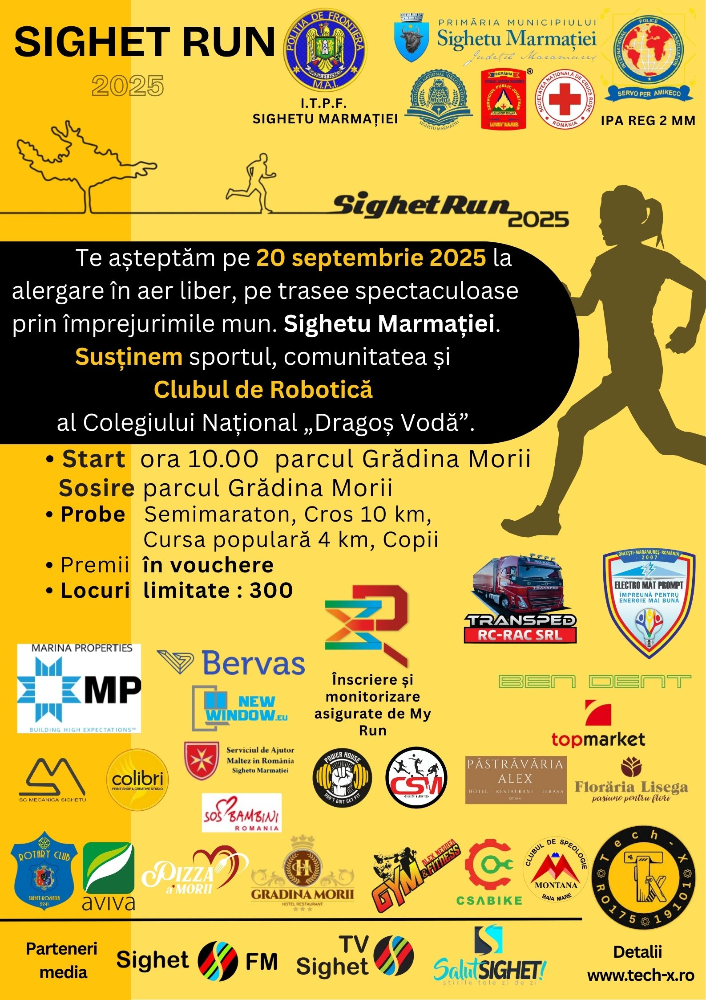
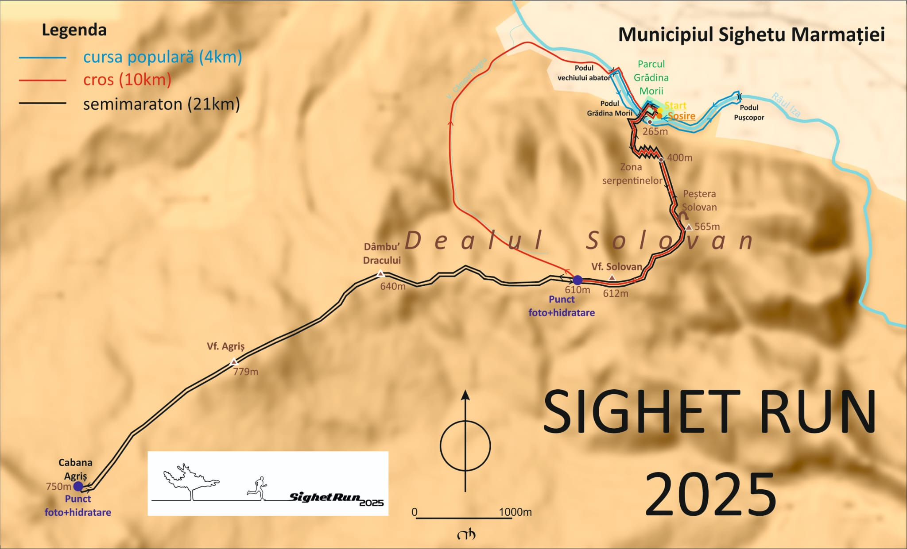

SIGHET RUN 2025
Start Sighet Run 2025
Dragi alergători, voluntari și spectatori,
Vă mulțumim din suflet că ați fost alături de noi la Sighet Run 2025! Sperăm că v-ați bucurat de fiecare moment, de la energia startului până la satisfacția de a trece linia de sosire. A fost o ediție memorabilă, plină de zâmbete, efort și spirit de echipă.
Sunteți cu toții adevărați campioni!
Pentru a retrăi momentele frumoase ale evenimentului, am pregătit o galerie foto și video.
📷Galeria foto: Apasă aici!
📽️Filmările evenimentului cu ajutorul dronei: Apasă aici!
SIGHET RUN
2025
🏃♀️🏞️ Iubești mișcarea, natura și provocările care îți pun la încercare limitele? Atunci nu rata Sighet Run
2025 – o alergare în aer liber ce îmbină sportul, energia comunității și frumusețea naturală a Maramureșului într-un singur eveniment memorabil!
📅 Pe 20 septembrie 2025, te invităm să iei parte la o competiție sportivă dedicată tuturor vârstelor, desfășurată pe trasee spectaculoase din împrejurimile municipiului Sighetu Marmației, cu startul și sosirea în emblematicul Parc Grădina Morii.
🏁 Fie că ești alergător cu experiență sau doar pasionat de un stil de viață activ, vei găsi o probă potrivită pentru tine:
• 🏃♂️ Semimaraton
• 🏃 Cros 10 km
• 🏃♀️ Cursa populară 4 km
• 🚸 Curse dedicate copiilor
🥇 Pe lângă trasee bine organizate și provocatoare, te așteaptă premii atractive, categorii diverse de vârstă și o atmosferă de neuitat, alături de oameni care împărtășesc aceleași valori: sănătate, implicare, respect și comunitate.
🤖 În cadrul evenimentului, susținem nu doar sportul, ci și inițiativele educaționale locale. Astfel, o parte din activitate promovează și sprijină Clubul de Robotică al Colegiului Național „Dragoș Vodă”, Tech-X, un spațiu unde tinerii învață, creează și inovează în domeniul tehnologiei și roboticii.
⚠️ Locuri limitate: doar 300 de participanți! Nu rata șansa de a alerga, de a te bucura de natură și de a face parte dintr-un eveniment care contează.
📍 Organizare de încredere, parteneri locali implicați, cronometrare profesională cu My Run, siguranță, voie bună și o zi care îți va rămâne în memorie!
🎉 Vino să alergi cu noi la Sighet Run 2025 – acolo unde fiecare pas înseamnă energie, comunitate și viitor!
📍Înscrierile și monitorizarea sunt asigurate de https://my-run.ro ✅🏃♂️

📥 Descarcă Regulamentul
📄 Descarcă Declarația
📍 Descarcă Traseul pentru 21km
📍 Hartă detaliată pentru 21km
📍 Descarcă Traseul pentru 10km
📍 Hartă detaliată pentru 10km
❗ Atenție: Declarația trebuie descarcată, completată, semnată și adusă la START! ❗ Fișierul GPX conține traseul complet de 21/10 km și poate fi folosit în aplicații de navigație
